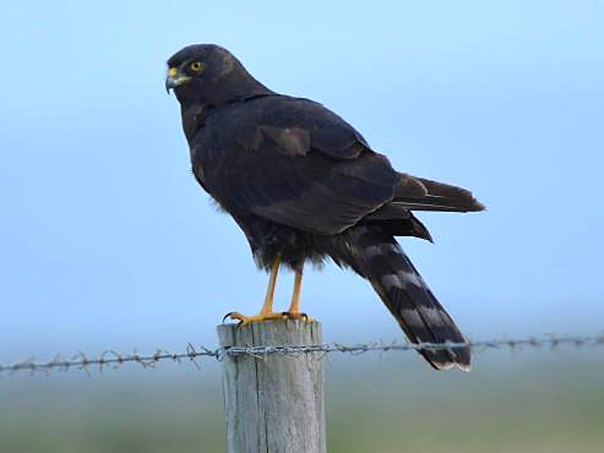
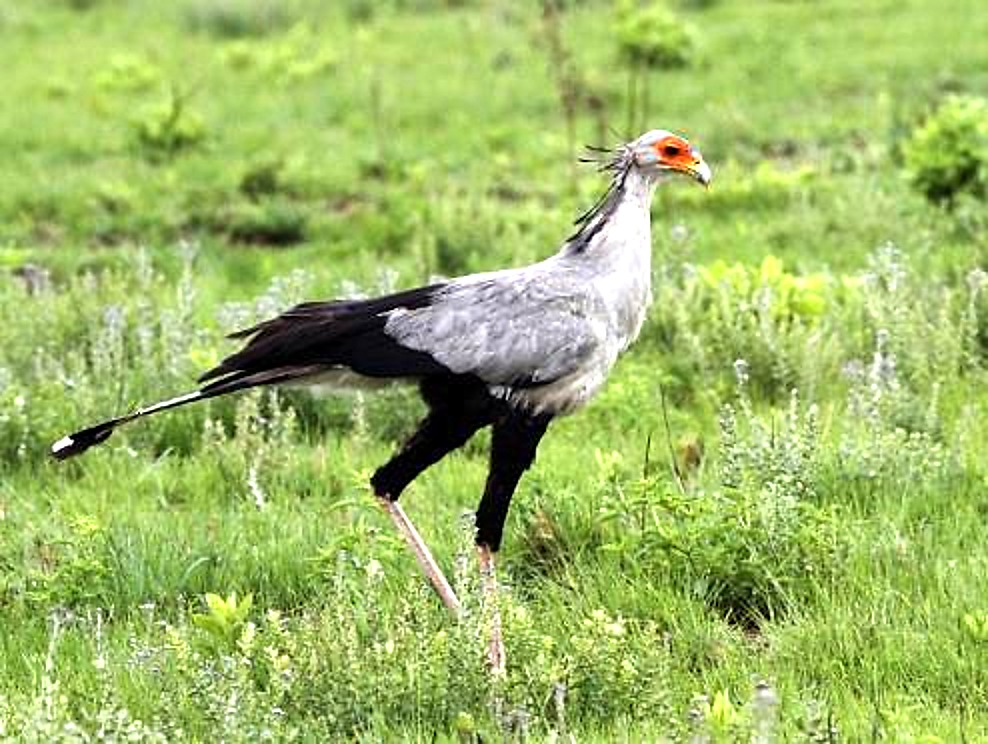
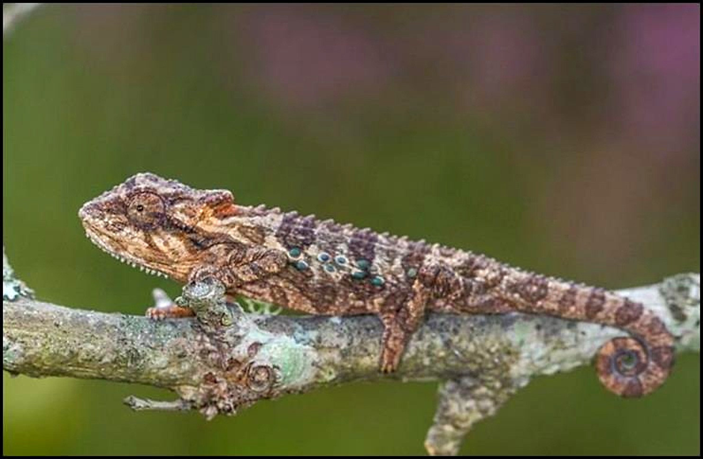
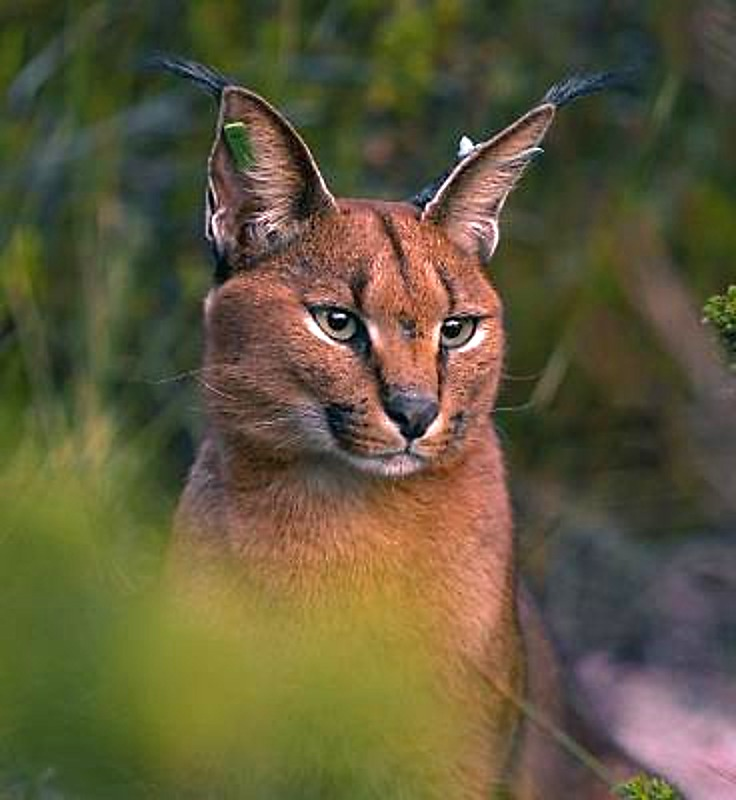
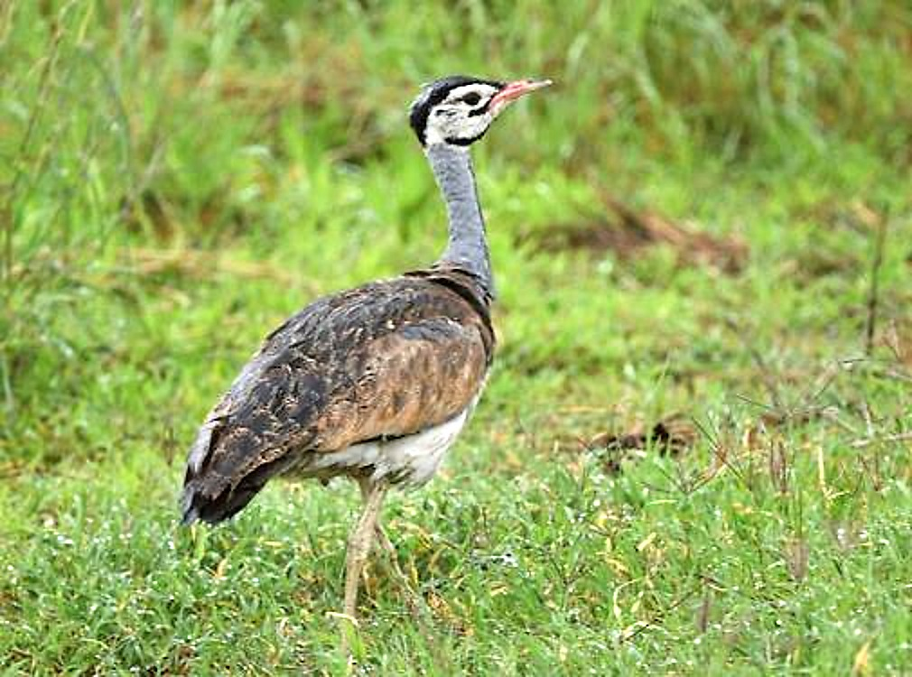
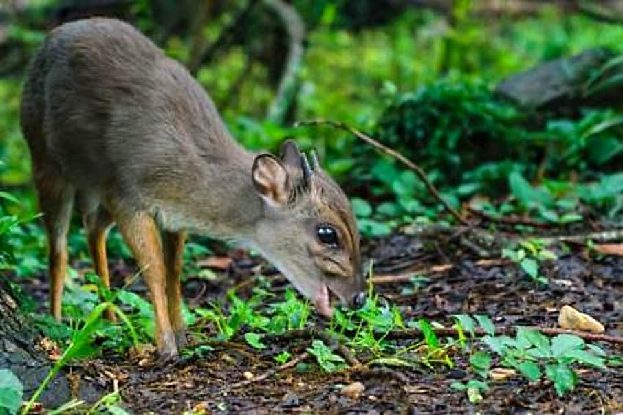

1,433 hectares of pristine coastal wilderness · Eastern Cape, South Africa
Stretched along the Eastern Cape coastline between the Kabeljous and Gamtoos estuaries, this is a landscape shaped by wind, tide, and centuries of solitude. Primary coastal dunes give way to dense thicket, open renosterveld, wetlands alive with birdcall, and estuarine flats where the river meets the Indian Ocean. It is a place where six distinct ecosystems converge within a single boundary — a mosaic of habitats so diverse that each ridge reveals a different world.
"Recognised for its conservation importance since the early 1980s — a landscape of irreplaceable habitats that has endured intact while the coastline around it has transformed."
This is not land that needs its conservation case made. Every major biodiversity assessment conducted in the Eastern Cape over the past two decades has flagged this property as a priority. The property contains Critical Biodiversity Areas under both provincial and national frameworks, is classified as a High Spatial Priority by the Eastern Cape Protected Area Expansion Strategy, and sits within a Priority Focus Area under the National Protected Area Expansion Strategy. The independent assessment recommends Nature Reserve status — the highest category of biodiversity stewardship.
Wildlife on the Land






Threatened Flora — 16 Species of Conservation Concern
From renosterveld ridges to estuarine mudflats, every hectare tells its own story.
This land carries the weight of deep human history. The Gamtoos people — a Khoekhoe clan whose name survives in the river — inhabited this coastline for centuries, living as pastoralists and hunter-gatherers between the estuaries. 0 archaeological sites have been documented across the property: shell middens, stone-age artefacts, ceramic pottery, ostrich egg-shell beads, and burial sites. In 2008, the Gamtkwa Khoisan Council conducted the first pre-historic reburial ceremony in the Eastern Cape, returning 0-year-old human remains to the earth under a full moon on this land. A 0-year-old elephant tooth found nearby confirmed that megafauna once roamed these dunes.
Assessment Recommendation
Nature Reserve Status
The independent conservation assessment by Dr Wentzel Coetzer of Conservation Outcomes recommends the highest category of biodiversity stewardship — a recognition of the property's irreplaceable ecological value.
The property borders two areas of state-owned land that have been earmarked for conservation since the 1990s — Papiesfontein State Land and the Kabeljous Nature Reserve. Together, they present the opportunity to establish a greater coastal Protected Area stretching unbroken from the Kabeljous estuary to the Gamtoos estuary. The property sits within the Baviaans Macro-Ecological Corridor, connecting the Baviaanskloof Mega-Reserve complex with the coast. It is a keystone piece in a conservation jigsaw that has been waiting decades to be completed.
For a custodian with vision, this is more than a land acquisition. It is the chance to anchor a landscape-scale conservation legacy — one that protects endangered ecosystems, secures threatened species, preserves an extraordinary archaeological record, and generates sustainable revenue through eco-tourism in one of South Africa's most sought-after coastal regions.
All enquiries are handled in strict confidence. Detailed information — including the full conservation assessment, property survey, and archaeological reports — is available to qualified parties.